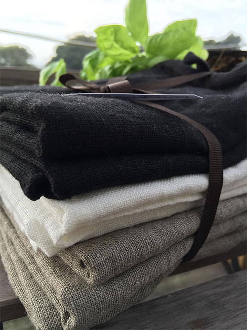

<div id="product-main">
    <div id="product">
        <div>
            <a class="highslide" onclick="return hs.expand(this, config1 )" href="images/set_of_seven_500.jpg" title="Rough Linen Set of Seven in Orkney black, white and natural"></a>
        </div>
        <div id="description">
            <h1>Set of Seven</h1>
            <h2 class="alignRight">Orkney natural, white or black</h2>
            <h3 class="alignRight"><span style="text-decoration:line-through;">$161</span> $145</h3>
            <div class="alignRight fine_print"></div>
            <div id="buy_button" class="floatright"><a href="https://store.roughlinen.com/set-of-seven-p94.aspx" title="add to basket">add to basket</a>
            </div>
            <p class="clearBoth">Includes seven <a href="rough-linen-tea-towel.html">Tea Towels</a>: 2 Orkney natural, 2 Orkney white and 3 Orkney black. Or you may choose to have all seven in the same color.</p>
            <br>
            <p> Each towel measures 27" x 18"</p>
            <br>
            <p>Linen is very absorbent and stays fresher because it dries quickly and is inherently anti-microbial. The perfect kitchen towel! Use one for every day of the week.</p>
            <br>
            <p><em>"I have a thing for tea towels. That being said, these are the best and I wish I had a whole drawer full of them."</em>  ~ <strong>Lisa</strong></p>
            <br>
            <p>Here you go Lisa!</p>
        </div>
        <!-- end description -->
    </div>
    <!-- end product -->
</div>
<!-- end main_product -->

